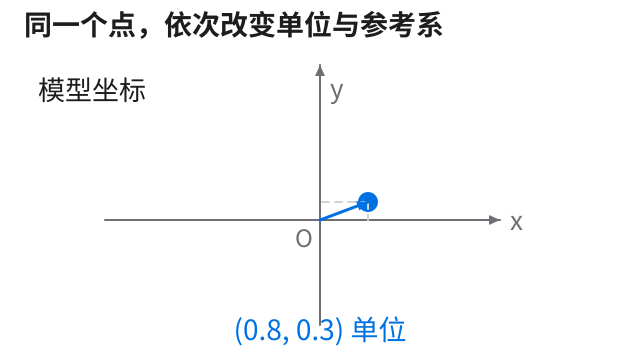
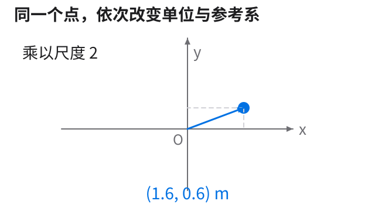
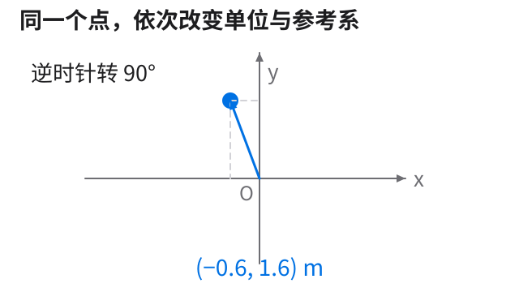
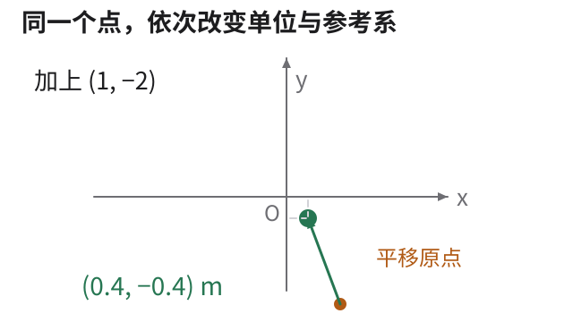

屏幕里的房间看起来很像实物，可把一个标称半米宽的机器人模型放进去，它也许只有杯子那么大。即使大小碰巧合适，屏幕里的“上”也未必就是现实的竖直方向。要在这个房间里测距和规划，需要先把几份坐标约定对上。
用一把尺确定尺度
单目重建可以恢复相对形状，但模型的一单位不一定是一米。先找两个在模型和现场都能准确辨认的端点，例如地板拼缝的两个交点。假设现场距离为 3 米，模型中量得 1.5 个单位，统一尺度就是每个单位 2 米。另一段模型长度若为 0.8 单位，换算后应是 1.6 米。
别用同一把基准既求比例，又声称验证了比例。另选一段不同方向、不同位置的已知长度做独立检查。两个端点太近时，一点标记误差就可能占很大比例；模型有局部形变时，用一条基准得到的比例也无法同时修复每一处几何。
放平地板，再确定朝向
选多个落在地板上的点拟合平面。垂直于该平面的方向叫作法向。拟合能给出一条轴，却还允许法向取两个相反方向。用比地面高的桌面或已知重力方向定出“上”，把地板转成水平，再选地板上的基准点作为地图原点。
此时仍可把整间房绕竖轴任意旋转，地板一直是水平的。因此还需要一条可辨认的水平轴，例如从走廊入口指向尽头的方向。尺度、旋转、平移一起决定从模型点到地图点的变换。可以用变换后的原点和三根短坐标轴作图检查，避免只看鸟瞰图误判发生了镜像或左右翻转。

做一次含缩放、旋转和平移的换算
先在二维地面平面上计算。模型点 P 在模型原点右方 0.8 单位、前方 0.3 单位，写作 (0.8,0.3)。比例为每单位 2 米，缩放后为 (1.6,0.6) 米。若模型的正 x 在地图中朝正 y，则按逆时针九十度旋转，得到 (−0.6,1.6)。再假设模型原点在地图中的位置是 (1,−2) 米，最终 P 位于地图 (0.4,−0.4) 米。
缩放、旋转、平移各改了什么
用地面上的一个二维点练习。尺度为每模型单位2米，方向需逆时针转90度，模型原点在地图中的位置为(1,−2)米；每一步的输入单位都明确写出。

先看模型单位
查看大图
模型点在原点右方0.8、前方0.3个单位。数字暂时只表达模型内部的比例，还不能拿来判断机器人能否穿过门洞。先通过一段已知长度求出每个模型单位对应多少米，才能把屏幕里的距离与现场尺子的读数比较。

换算成米
查看大图
这里每个模型单位对应2米，所以两个坐标分量一起乘2，得到(1.6,0.6)米。改变单位不会改变这根向量的方向。不能只放大模型外观而继续让导航程序使用旧坐标，否则显示大小与计算距离会出现两套尺度。

调整朝向
查看大图
模型正x在地图中应朝正y，于是逆时针转90度。(x,y)变为(−y,x)，点落到(−0.6,1.6)米。长度仍然等于旋转前的长度，只有分量方向变了。若长度也变了，需要检查是否把缩放或错误矩阵混进了旋转。

最后移动原点
查看大图
最后加地图中模型原点的位置(1,−2)米，得到(0.4,−0.4)米。平移已经使用米，不再乘一次尺度。反向验证时先减去平移，再逆旋转，最后除以2，应该找回最初的模型坐标(0.8,0.3)。
单位、方向、原点是三个不同问题。保持运算顺序一致，并用逆变换把结果投回原位置，是很实用的自检办法。
小练习：模型原点(0,0)经过这三步，最终落在哪里？
落在地图(1,−2)米。零向量经过缩放和旋转仍为零，只有最后的平移决定模型原点在地图中的位置。
反向换算时先减去 (1,−2)，再转回原方向，最后除以 2，就会恢复 (0.8,0.3)。其中平移本身已经以米为单位，不能把它和模型坐标一起再缩放一遍。为避免配置歧义，给每个输入标明坐标系和单位，并把得到的两个轴方向都画出来。
怎样让选中的地砖成为导航目标
相机常用光学坐标，x 指右、y 指下、z 指前；ROS 中常见的机身坐标是 x 指前、y 指左、z 指上。图像里向下的像素变化不能直接解释为机器人向前多少米。先利用三维表面得到被选中的模型坐标，再换到地图坐标。将这个地图点做逆变换投回模型，应能落在刚才选中的同一块地砖。
假设门洞净宽 0.70 米，机器人宽 0.50 米，正对门并居中时，左右理论余量各为 (0.70 − 0.50)/2 = 0.10 米。转动会改变机身在门宽方向上的投影，定位误差也会占用余量。把足迹以几个不同朝向叠在门洞上，并与另一段独立实测距离核对，才知道这张地图是否适合当前的导航判断。
用一条未参与对齐的量测验收
假设再选一段模型距离 1.10 单位，按当前比例应为 2.20 米；现场量到 2.14 米，相差 6 厘米，约占实测长度的 2.8%。先确认两次到底是否量到了同样的端点，再判断这来自端点标记误差、尺度误差还是模型局部形变。同一比例下，多段长度都系统性偏大和只有一处异常，对应的解释不同。
若要验证的是机器人通行，把尺度误差和定位误差也放进净空预算。正面测到两侧都有余量，只能说明这个姿态下有空间；转弯时长方形轮廓扫过的区域更大。可用仿真平面和独立距离检验坐标对齐，再单独核实路线上的几何，避免仅凭“房间看起来很像”判定地图可用。